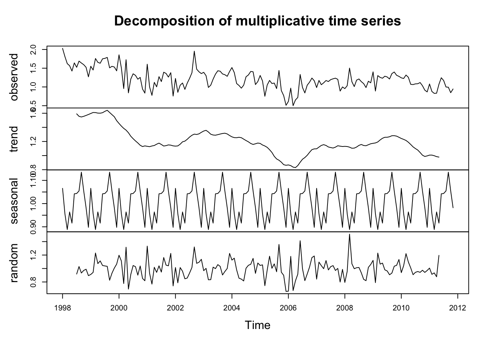

Below we have a scatter plot showcasing the relationship between the normalized nitrate levels in California’s drinking water and the corresponding rates of colorectal cancer across various counties.
Average Nitrate Levels
ggplot(data, aes(x = normalized_nitrate, y = normalized_cancer_rate)) +geom_point(aes(color = county_served), alpha =0.6) +# Using alpha for better visibility if points overlapgeom_smooth(method ="lm", se =FALSE, color ="blue") +# Adding a linear trend linetheme_minimal() +labs(title ="Normalized Nitrate Levels vs. Normalized Colorectal Cancer Rates",x ="Normalized Nitrate Levels",y ="Normalized Colorectal Cancer Rates" ) +theme(legend.position ="none") # Hiding the legend for clarity; remove if county-wise color coding is essential
The scatter plot illustrates a positive correlation between the normalized levels of nitrates in drinking water and the incidence rates of colo-rectal cancer across various counties in California. Most data points cluster around the center, indicating that numerous counties exhibit a moderate presence of both nitrates in drinking water and the colorectal cancer cases. The upward trend line woven signals that higher nitrate concentrations might be linked with increased cancer rates, and this requires further exploration. While the pattern suggests a potential environmental-health linkage, it’s a stepping stone that requires further analytical exploration.
Average Nitrate Levels
# Time Series Plotp <-ggplot(monthly_df, aes(x = date, y = average_result_value)) +geom_line() +scale_x_date(date_breaks ="1 year", date_labels ="%Y") +# Display only years on the x-axislabs(title ="Monthly Nitrate Levels for PWS ID: CA1910067",x ="Time",y ="Average Nitrate Level (mg/L)")ggplotly(p)
Log Transformation
Average Nitrate Levels
# Time Series Plot of the log-transformed datap_log <-ggplot(monthly_df, aes(x = date, y = log_average_result_value)) +geom_line() +scale_x_date(date_breaks ="1 year", date_labels ="%Y") +labs(title ="Log of Monthly Nitrate Levels for PWS ID: CA1910067",x ="Time",y ="Log of Average Nitrate Level (mg/L)")ggplotly(p_log)
Lag Plots
Lag plot is a visual representation of the nitrate levels for each month, to identify any patterns or relationships in the data over time. Each panel represents a different lag, meaning the number of months between the points in the series. The plot shows data from a public water system (PWS) with the ID CA1910067.
Average Nitrate Levels
# Create the lag plot for nitrate time series datalag_plot_nitrate <-gglagplot(nitrate_ts, do.lines =FALSE) +xlab("Lags") +ylab("Log-transformed Nitrate Levels") +ggtitle("Lag Plot for Monthly Nitrate Levels for PWS ID: CA1910067") +theme_bw()# Convert to a plotly object for interactivityggplotly(lag_plot_nitrate)
We can observe clusters of similarly colored points at lag 1 do indicate some level of autocorrelation in the nitrate levels. This means that the nitrate level from the previous month has some degree of influence on the current month’s level. For time series modeling, such as ARIMA (Autoregressive Integrated Moving Average), this suggests that an autoregressive term would indeed be significant, meaning that the model would use previous data points to predict future ones.
The fact that this autocorrelation weakens at higher lags, implies that older data points have less predictive power. This would be important when determining the order of the AR term in an ARIMA model; a smaller order may be sufficient, as incorporating too many past values might not improve the model. The presence of seasonality, suggested by the clustering of the same months’ colors, might also imply that a seasonal component should be considered in the modeling process, which could lead to the use of a Seasonal ARIMA (SARIMA) model.
Decomposition Plot
Average Nitrate Levels
# Decomposition using a multiplicative modelmultiplicative_decomp <-decompose(log_nitrate_ts, type ='multiplicative')plot(multiplicative_decomp)

Seasonal: The seasonal component reveals a clear, consistent pattern that repeats annually. This suggests that there are predictable fluctuations in nitrate levels that correspond to the time of year, which could be associated with agricultural cycles, weather patterns, or other seasonal factors.
There seems to be some volatility, suggesting that there might be other factors or perhaps outliers influencing nitrate levels that are not captured by the seasonal or trend components.